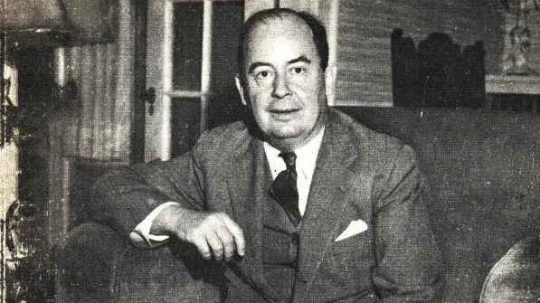

John Von Neumann
early life
John von neumann's early life John von Neumann was born
on December 28, 1098 in hungary budapest.
John was smart from when he was a child. By the age of six he was able to divide eight digit numbers in his head. By the age of 23 Neumann had got a degree in chemistry and a degree and doctorate in mathematics at the University of budapest.
After Neumann graduated from the University of Budapest he was giving private lectures in Berlin from 1926 to 1930. This is when John married his wife Merrite Koevesi where they both moved to New Jersey where he began giving lectures at the University of Princeton of Quantum Theory.
When John was giving lectures in 1943 he was asked to help work on the Manhattan project. Where he got his love for computers.

home page